PRODUCT DETAILS
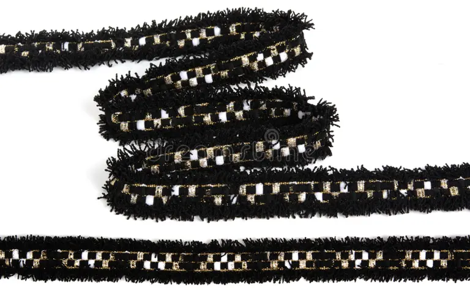
 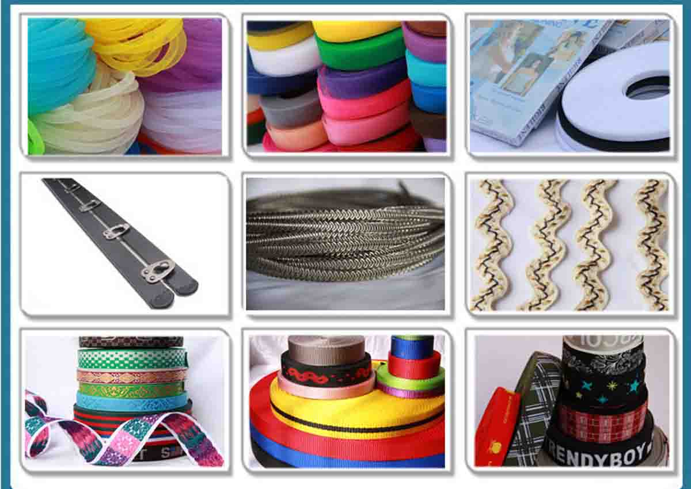
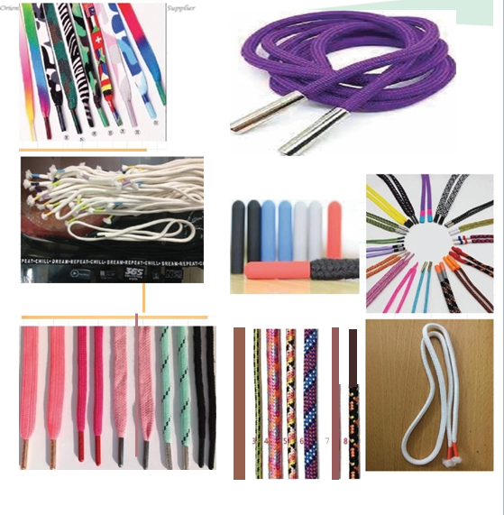
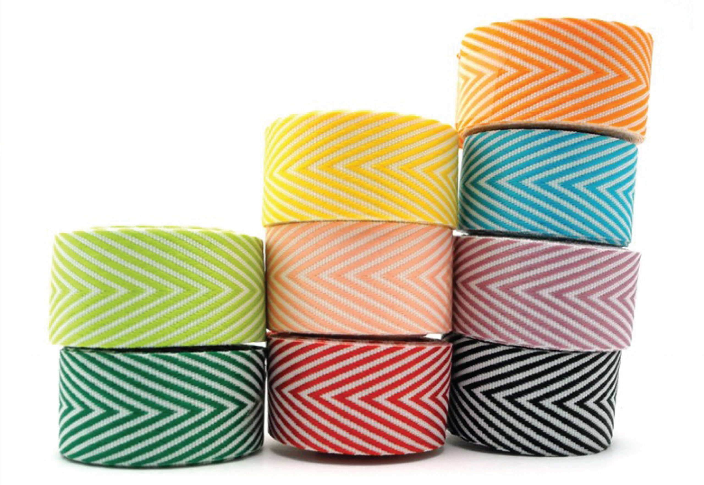
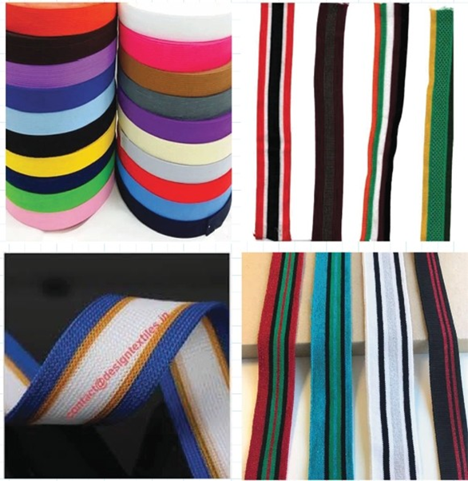
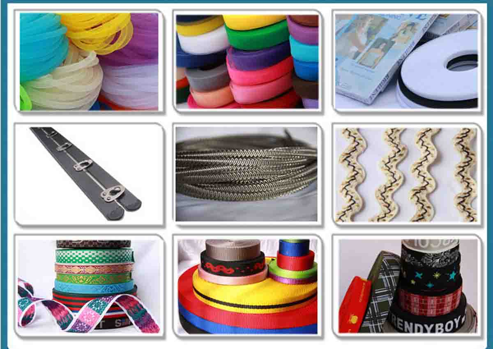
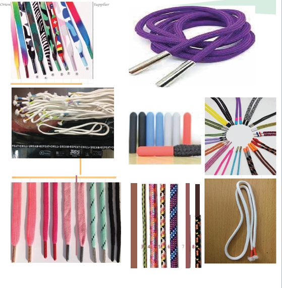
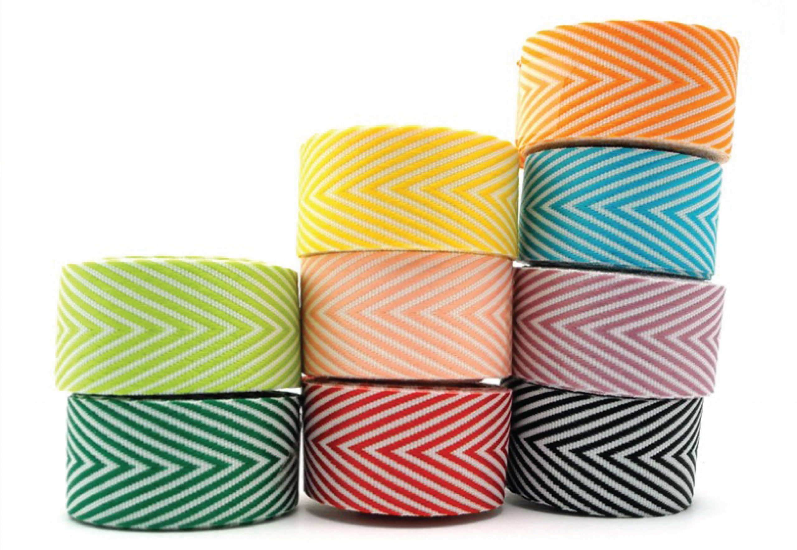
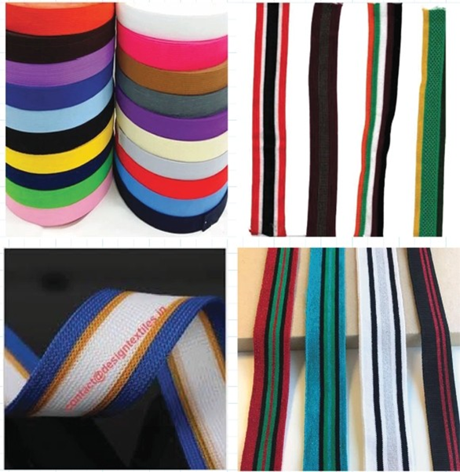
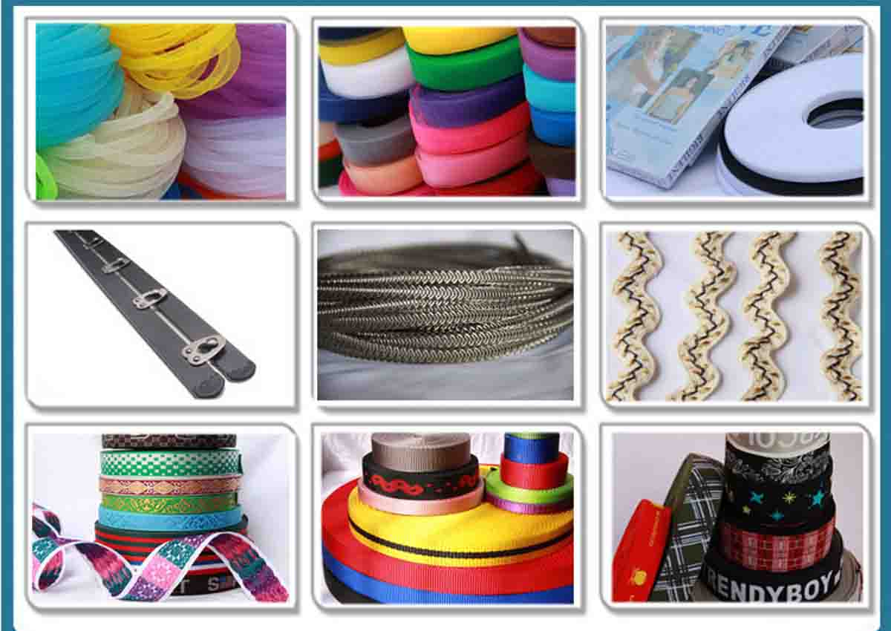
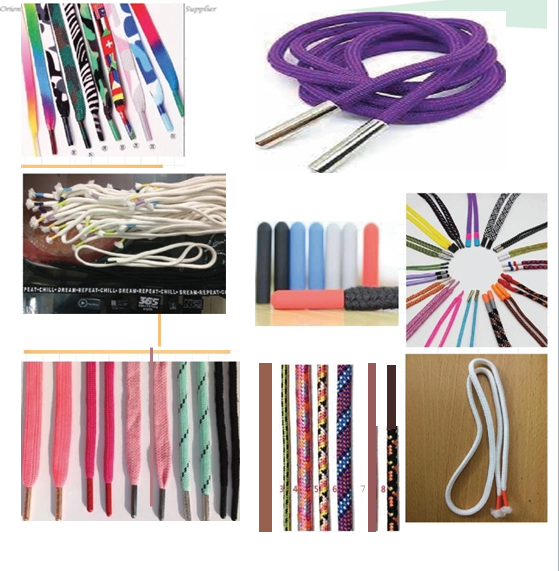
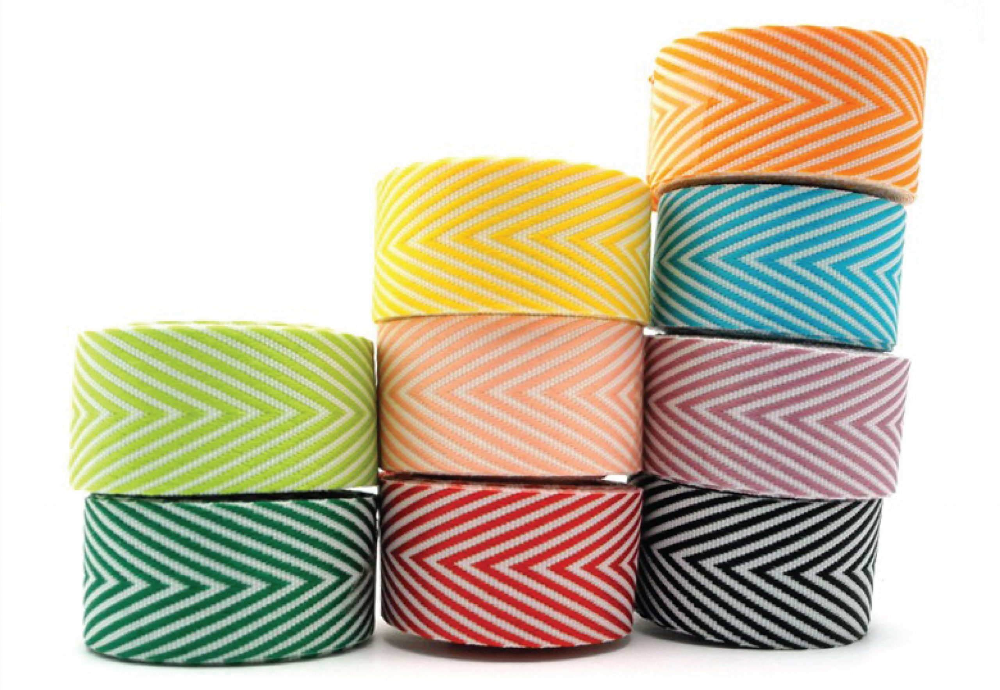
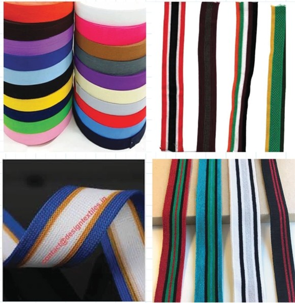
HIGH QUALITY TWILL TAPE AND DRAWSTRING
Our high-quality twill tape and drawstring offers a perfect balance of durability and affordability. Made from premium materials, it features a tightly woven diagonal pattern that ensures strength, flexibility, and long-lasting use. Designed for a variety of applications, it resists fraying and maintains its structure even under stress, making it an excellent choice for both professional and DIY projects. Despite its superior quality, our twill tape remains competitively priced, offering exceptional value without compromising on performance.
Last updated 3 mins ago